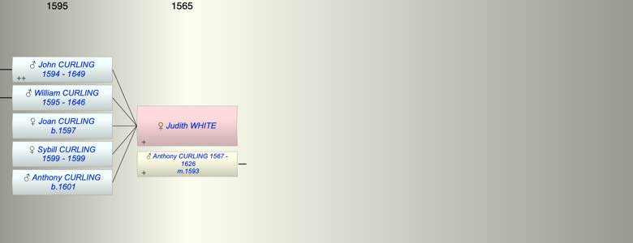

| [Index] |
| Judith WHITE |
|  |
| m. 10 Oct 1593 Anthony CURLING (1567 - 1626) at St Peter, Thanet |
| Children (5): |
| John CURLING (1594 - 1649) |
| William CURLING (1595 - 1646) |
| Joan CURLING (1597 - ) |
| Sybill CURLING (1599 - 1599) |
| Anthony CURLING (1601 - ) |
| Grandchildren (3): |
| Robert CURLING (1620 - 1621), Mary CURLING (1624 - ), John CURLING (1624 - 1674) |
| Events in Judith WHITE's life | |||||
| Date | Age | Event | Place | Notes | Src |
| 10 Oct 1593 | Married Anthony CURLING (aged 26) | St Peter, Thanet | Note 1 | ||
| 1594 | Birth of son John CURLING | St Peters, Thanet | Note 2 | ||
| 1595 | Birth of son William CURLING | St Peter, Thanet | Note 3 | ||
| 1597 | Birth of daughter Joan CURLING | St Peter, Thanet | bap 26 Jun 1597 ex FMP PR | ||
| 1599 | Birth of daughter Sybill CURLING | St Peter, Thanet | bap 11 Nov 1595 ex FMP PR | ||
| 1599 | Death of daughter Sybill CURLING | St Peter, Thanet | Note 4 | ||
| 1601 | Birth of son Anthony CURLING | St Peter, Thanet | bap 24 May 1601 ex FMP PR | ||
| 1626 | Death of husband Anthony CURLING (aged 59) | St Laurence | buried 10 Sep 1626 ex FMP PR | ||
| 1646 | Death of son William CURLING (aged 51) | St Laurence | Note 5 | ||
| 1649 | Death of son John CURLING (aged 55) | ||||
| Personal Notes: |
| Nothing further |
| Created on a Mac™ using iFamily for Mac™ on 8 Oct 2023 |